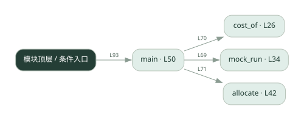

2-16 · 全课程第 36 节
预算分摊
034.py
源码快照 f079a5e1ccfd · 静态解析 · 2026-09-10
01 / 要完成的事
按每个 Agent 的输入输出用量累计费用，并与预算比较。
02 / 为什么要做
总费用高时需要知道花在谁身上，以及何时该停止。
03 / 当前代码状态
cost_of 固定返回 0，allocate 只有 pass，main 没有实现预算中止判断。因此当前输出零费用，不能说明预算控制已完成。
检测到 None 赋值或 pass 的位置：47。这些也可能是正常初始化，需结合下方函数职责与源码判断；不能仅凭没有下划线认定完成。
主要展示本地计算、内存状态或模拟流程；是否写文件/启动子进程请看调用表。 本次只做静态解析，没有运行练习，也没有替你填写或修改原代码。
04 / 调用图
打开大图 ↗实线：源码中的直接调用；虚线：函数引用/注册、动态调用或按方法名推断的候选。L 是调用所在源码行号。箭头不表示执行顺序或每次必经；分支、循环、异步调度及框架内部调用需结合源码。灰色是外部/未解析目标，橙色是动态分发；省略 print、len 和常规容器操作以减少干扰。孤立函数可能尚未接入。

先从 main 及模块入口 出发，沿箭头找到本文件函数，再查看外部调用或动态分发。右侧调用清单保留所有静态调用点，能回到原文件逐行对照。
05 / 函数定位
| 函数 / 定义行 | 职责（源码注释） | 内部调用 |
|---|---|---|
cost_ofL26 | 算一次调用的成本（元）。输入、输出单价不同，要分开乘，再除以 1_000_000。 | 未发现显式函数调用（可能直接计算、读写状态或尚未实现） |
mock_runL34 | 模拟一个 agent 执行任务，返回 (agent 名, prompt_tokens, completion_tokens)。 | len |
allocateL42 | 成本分摊：把本次 cost 累加到 agent_name 名下。 | 未发现显式函数调用（可能直接计算、读写状态或尚未实现） |
mainL50 | 以源码函数体为准；下列调用展示其依赖。 | print, mock_run, cost_of, allocate, sorted, ledger.items |
这样做的优点
费用可归因，便于调整调用策略。
代价与局限
示例 token 与单价不代表实际账单；调用后记账可能超过预算。
适用场景
预算教学、离线成本模型。
不宜直接照搬
要求严格绝不超额却没有调用前预留和并发控制的系统。
动手检验理解
设置小于一次调用成本的预算，观察何时停止、是否已超额。
有未实现位置时先预测，再补齐验证。能启动不等于逻辑正确。
查看全部 19 个静态调用 / 引用点
| 调用方 | 目标 | 源码行 | 类型 |
|---|---|---|---|
| mock_run | len | 37 | 调用 |
| mock_run | len | 38 | 调用 |
| main | print | 64 | 调用 |
| main | print | 65 | 调用 |
| main | print | 66 | 调用 |
| main | mock_run | 69 | 调用 |
| main | cost_of | 70 | 调用 |
| main | allocate | 71 | 调用 |
| main | print | 73 | 调用 |
| main | print | 80 | 调用 |
| main | print | 81 | 调用 |
| main | sorted | 82 | 调用 |
| main | ledger.items | 82 | 调用 |
| main | print | 83 | 调用 |
| main | print | 84 | 调用 |
| main | print | 86 | 调用 |
| main | print | 88 | 调用 |
| main | print | 89 | 调用 |
| <模块入口> | main | 93 | 调用 |